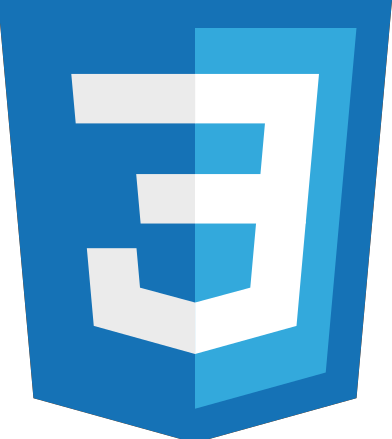

HTML
Hypertext Markup Language adalah sebuah bahasa markah yang digunakan untuk membuat sebuah halaman web
Read More

CSS
Cascading Style Sheet merupakan aturan untuk mengatur beberapa komponen dalam sebuah web sehingga akan lebih terstruktur dan seragam
Read More
JavaScript
JavaScipt adalah bahasa pemrograman tingkat tinggi dan dinamis. Kode JavaScript dapat disisipkan dalam halaman web menggunakan tag SCRIPT
Read More